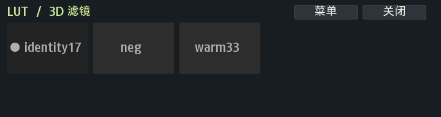

NX-WA
2.88.0-nxwa.6 · AGPL-3.0
Samsung NX500 / NX1 增强固件 mod
给十年前的相机
重写一层
Tizen 2.2 · DRIMe5 · fork 自 ottokiksmaler/nx500_nx1_modding
界面在 Linux 侧重画，色彩在 p7 的常量表里改
NXUI · 机上界面

720 × 192 常驻滤镜条 · 实机渲染（库中 3 个 look 时的快照）
Nuklear + X11/Xft
不新开窗口
三处入口（EV+AEL / EV+WiFi / 主菜单）全部转发同一进程，只换数据源与执行器。
不碰取景帧
只画 720×192 的小面板，不抓取、不重绘取景画面 —— 单核 CPU 上全屏自绘是墙。
半按 = 隐藏，不还原
让开画面拍照。此时若还原，照片就丢了 LUT —— 这是刻意设计，不是 bug。
退出 = 必还原
退出时自动把登记表与槽恢复原厂，绝不留相机在「被改过」的状态。
焦点要还回去
相机没有窗口管理器。抢了 X 焦点不还，原生菜单方向键就会时灵时不灵。
68 条横向滚动
左右滑动或点选，≈1.3 s 出画面；保存并关闭 才写盘落状态。
功能
FilmLab 68
负片 / 反转 / 黑白 / 电影 / 风格五族，菜单自动分页。配方库在 SD 卡，可编辑可扩充。
PW 7 维
R/G/B/HUE/SAT/SHARP/CON 一次直进 ISP，逐维读回可验 ——「值变了」≠「被消费」。
3D LUT
4 字节换表：改一个登记表项 + 写 19,712 B + 半按。取景与成片两条独立链路。
Web 相册
8080 端口 readdir 实时目录，新拍照片立刻可见；缩略图后台预热，不抢拍摄。
Web 遥控
折叠目录模型 + 缩略图缓存，按需加载；WiFi 在线推送前端，免拔卡。
对焦与 EV
对焦堆栈 / 对焦按钮 / EV 档位，全部脚本化，配置写在 SD 卡。
68胶片配方
42LUT 槽位
4,913表项 17³
7PW 维度
1.3s预览出画面